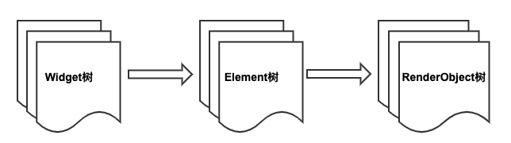

14.2 Element、BuildContext和RenderObject
14.2.1 Element
在“2.2 Widget简介”一节，我们介绍了Widget和Element的关系，我们知道最终的UI树其实是由一个个独立的Element节点构成。我们也说过组件最终的Layout、渲染都是通过RenderObject来完成的，从创建到渲染的大体流程是：根据Widget生成Element，然后创建相应的RenderObject并关联到Element.renderObject属性上，最后再通过RenderObject来完成布局排列和绘制。
Element就是Widget在UI树具体位置的一个实例化对象，大多数Element只有唯一的renderObject，但还有一些Element会有多个子节点，如继承自RenderObjectElement的一些类，比如MultiChildRenderObjectElement。最终所有Element的RenderObject构成一棵树，我们称之为”Render Tree“即”渲染树“。总结一下，我们可以认为Flutter的UI系统包含三棵树：Widget树、Element树、渲染树。他们的依赖关系是：Element树根据Widget树生成，而渲染树又依赖于Element树，如图14-1 所示。

现在我们重点看一下Element，Element的生命周期如下：
- Framework 调用
Widget.createElement创建一个Element实例，记为element - Framework 调用
element.mount(parentElement,newSlot)，mount方法中首先调用element所对应Widget的createRenderObject方法创建与element相关联的RenderObject对象，然后调用element.attachRenderObject方法将element.renderObject添加到渲染树中插槽指定的位置（这一步不是必须的，一般发生在Element树结构发生变化时才需要重新添加）。插入到渲染树后的element就处于“active”状态，处于“active”状态后就可以显示在屏幕上了（可以隐藏）。 - 当有父Widget的配置数据改变时，同时其
State.build返回的Widget结构与之前不同，此时就需要重新构建对应的Element树。为了进行Element复用，在Element重新构建前会先尝试是否可以复用旧树上相同位置的element，element节点在更新前都会调用其对应Widget的canUpdate方法，如果返回true，则复用旧Element，旧的Element会使用新Widget配置数据更新，反之则会创建一个新的Element。Widget.canUpdate主要是判断newWidget与oldWidget的runtimeType和key是否同时相等，如果同时相等就返回true，否则就会返回false。根据这个原理，当我们需要强制更新一个Widget时，可以通过指定不同的Key来避免复用。 - 当有祖先Element决定要移除
element时（如Widget树结构发生了变化，导致element对应的Widget被移除），这时该祖先Element就会调用deactivateChild方法来移除它，移除后element.renderObject也会被从渲染树中移除，然后Framework会调用element.deactivate方法，这时element状态变为“inactive”状态。 - “inactive”态的element将不会再显示到屏幕。为了避免在一次动画执行过程中反复创建、移除某个特定element，“inactive”态的element在当前动画最后一帧结束前都会保留，如果在动画执行结束后它还未能重新变成“active”状态，Framework就会调用其
unmount方法将其彻底移除，这时element的状态为defunct,它将永远不会再被插入到树中。 - 如果
element要重新插入到Element树的其他位置，如element或element的祖先拥有一个GlobalKey（用于全局复用元素），那么Framework会先将element从现有位置移除，然后再调用其activate方法，并将其renderObject重新attach到渲染树。
看完Element的生命周期，可能有些读者会有疑问，开发者会直接操作Element树吗？其实对于开发者来说，大多数情况下只需要关注Widget树就行，Flutter框架已经将对Widget树的操作映射到了Element树上，这可以极大的降低复杂度，提高开发效率。但是了解Element对理解整个Flutter UI框架是至关重要的，Flutter正是通过Element这个纽带将Widget和RenderObject关联起来，了解Element层不仅会帮助读者对Flutter UI框架有个清晰的认识，而且也会提高自己的抽象能力和设计能力。另外在有些时候，我们必须得直接使用Element对象来完成一些操作，比如获取主题Theme数据，具体细节将在下文介绍。
14.2.2 BuildContext
我们已经知道，StatelessWidget和StatefulWidget的build方法都会传一个BuildContext对象：
Widget build(BuildContext context) {}
我们也知道，在很多时候我们都需要使用这个context 做一些事，比如：
Theme.of(context) //获取主题
Navigator.push(context, route) //入栈新路由
Localizations.of(context, type) //获取Local
context.size //获取上下文大小
context.findRenderObject() //查找当前或最近的一个祖先RenderObject
那么BuildContext到底是什么呢，查看其定义，发现其是一个抽象接口类：
abstract class BuildContext {
...
}
那这个context对象对应的实现类到底是谁呢？我们顺藤摸瓜，发现build调用是发生在StatelessWidget和StatefulWidget对应的StatelessElement和StatefulElement的build方法中，以StatelessElement为例：
class StatelessElement extends ComponentElement {
...
@override
Widget build() => widget.build(this);
...
}
发现build传递的参数是this，很明显！这个BuildContext就是StatelessElement。同样，我们同样发现StatefulWidget的context是StatefulElement。但StatelessElement和StatefulElement本身并没有实现BuildContext接口，继续跟踪代码，发现它们间接继承自Element类，然后查看Element类定义，发现Element类果然实现了BuildContext接口:
class Element extends DiagnosticableTree implements BuildContext {
...
}
至此真相大白，BuildContext就是widget对应的Element，所以我们可以通过context在StatelessWidget和StatefulWidget的build方法中直接访问Element对象。我们获取主题数据的代码Theme.of(context)内部正是调用了Element的dependOnInheritedWidgetOfExactType()方法。
思考题：为什么build方法的参数不定义成Element对象，而要定义成BuildContext ?
进阶
我们可以看到Element是Flutter UI框架内部连接widget和RenderObject的纽带，大多数时候开发者只需要关注widget层即可，但是widget层有时候并不能完全屏蔽Element细节，所以Framework在StatelessWidget和StatefulWidget中通过build方法参数又将Element对象也传递给了开发者，这样一来，开发者便可以在需要时直接操作Element对象。那么现在笔者提两个问题：
- 如果没有widget层，单靠
Element层是否可以搭建起一个可用的UI框架？如果可以应该是什么样子？ - Flutter UI框架能不做成响应式吗？
对于问题1，答案当然是肯定的，因为我们之前说过widget树只是Element树的映射，我们完全可以直接通过Element来搭建一个UI框架。下面举一个例子：
我们通过纯粹的Element来模拟一个StatefulWidget的功能，假设有一个页面，该页面有一个按钮，按钮的文本是一个9位数，点击一次按钮，则对9个数随机排一次序，代码如下：
class HomeView extends ComponentElement{
HomeView(Widget widget) : super(widget);
String text = "123456789";
@override
Widget build() {
Color primary=Theme.of(this).primaryColor; //1
return GestureDetector(
child: Center(
child: TextButton(
child: Text(text, style: TextStyle(color: primary),),
onPressed: () {
var t = text.split("")..shuffle();
text = t.join();
markNeedsBuild(); //点击后将该Element标记为dirty，Element将会rebuild
},
),
),
);
}
}
-
上面
build方法不接收参数，这一点和在StatelessWidget和StatefulWidget中build(BuildContext)方法不同。代码中需要用到BuildContext的地方直接用this代替即可，如代码注释1处Theme.of(this)参数直接传this即可，因为当前对象本身就是Element实例。 -
当
text发生改变时，我们调用markNeedsBuild()方法将当前Element标记为dirty即可，标记为dirty的Element会在下一帧中重建。实际上，State.setState()在内部也是调用的markNeedsBuild()方法。 -
上面代码中build方法返回的仍然是一个widget，这是由于Flutter框架中已经有了widget这一层，并且组件库都已经是以widget的形式提供了，如果在Flutter框架中所有组件都像示例的
HomeView一样以Element形式提供，那么就可以用纯Element来构建UI了HomeView的build方法返回值类型就可以是Element了。
如果我们需要将上面代码在现有Flutter框架中跑起来，那么还是得提供一个“适配器”widget将HomeView结合到现有框架中，下面CustomHome就相当于“适配器”：
class CustomHome extends Widget {
@override
Element createElement() {
return HomeView(this);
}
}
现在就可以将CustomHome添加到widget树了，我们在一个新路由页创建它，最终效果如下如图14-2 和14-3（点击后）所示：


点击按钮则按钮文本会随机排序。
对于问题2，答案当然也是肯定的，Flutter 引擎提供的 API是原始且独立的，这个与操作系统提供的API类似，上层UI框架设计成什么样完全取决于设计者，完全可以将UI框架设计成 Android 风格或 iOS 风格，但这些事Google不会再去做，我们也没必要再去搞这一套，这是因为响应式的思想本身是很棒的，之所以提出这个问题，是因为笔者认为做与不做是一回事，但知道能不能做是另一回事，这能反映出我们对知识的理解程度。
14.2.3 RenderObject
在上一节我们说过每个Element都对应一个RenderObject，我们可以通过Element.renderObject 来获取。并且我们也说过RenderObject的主要职责是Layout和绘制，所有的RenderObject会组成一棵渲染树Render Tree。本节我们将重点介绍一下RenderObject的作用。
RenderObject就是渲染树中的一个对象，它主要的作用是实现事件响应以及渲染管线中除过 build 的执行过程（build 过程由 element 实现），即包括：布局、绘制、层合成以及上屏，这些我们将在后面章节介绍。
RenderObject拥有一个parent和一个parentData 属性，parent指向渲染树中自己的父节点，而parentData是一个预留变量，在父组件的布局过程，会确定其所有子组件布局信息（如位置信息，即相对于父组件的偏移），而这些布局信息需要在布局阶段保存起来，因为布局信息在后续的绘制阶段还需要被使用（用于确定组件的绘制位置），而parentData属性的主要作用就是保存布局信息，比如在 Stack 布局中，RenderStack就会将子元素的偏移数据存储在子元素的parentData中（具体可以查看Positioned实现）。
RenderObject类本身实现了一套基础的布局和绘制协议，但是并没有定义子节点模型（如一个节点可以有几个子节点，没有子节点？一个？两个？或者更多？）。 它也没有定义坐标系统（如子节点定位是在笛卡尔坐标中还是极坐标？）和具体的布局协议（是通过宽高还是通过constraint和size?，或者是否由父节点在子节点布局之前或之后设置子节点的大小和位置等）。
为此，Flutter框架提供了一个RenderBox和一个 RenderSliver类，它们都是继承自RenderObject，布局坐标系统采用笛卡尔坐标系，屏幕的(top, left)是原点。而 Flutter 基于这两个类分别实现了基于 RenderBox 的盒模型布局和基于 Sliver 的按需加载模型，这个我们已经在前面章节介绍过。
14.2.4 总结
本节详细的介绍了Element的生命周期，以及它Widget、BuildContext的关系，最后介绍了 Flutter UI框架中另一个重要的角色RenderObject，下一节我们将重点介绍一下 Flutter 渲染管线中的布局流程。